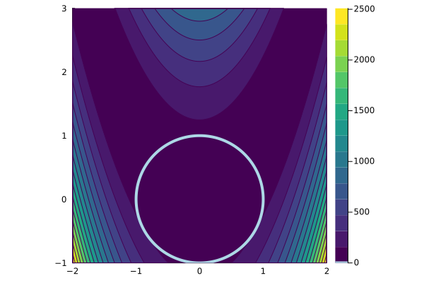

Modeling Optimization Problems
Rosenbrock Function in 2D
Let's solve the classical Rosenbrock function in two dimensions.
First, we need to make some imports.
using ModelingToolkit, Optimization, OptimizationOptimJLNow we can define our optimization problem.
@variables begin
x, [bounds = (-2.0, 2.0)]
y, [bounds = (-1.0, 3.0)]
end
@parameters a=1 b=1
loss = (a - x)^2 + b * (y - x^2)^2
@mtkbuild sys = OptimizationSystem(loss, [x, y], [a, b])A visualization of the objective function is depicted below.

Explanation
Every optimization problem consists of a set of optimization variables. In this case, we create two variables. Additionally, we assign box constraints for each of them. In the next step, we create two parameters for the problem with @parameters. While it is not needed to do this, it makes it easier to remake the problem later with different values for the parameters. The objective function is specified as well and finally, everything is used to construct an OptimizationSystem.
Building and Solving the Optimization Problem
Next, the actual OptimizationProblem can be created. At this stage, an initial guess u0 for the optimization variables needs to be provided via map, using the symbols from before. Concrete values for the parameters of the system can also be provided or changed. However, if the parameters have default values assigned, they are used automatically.
u0 = [x => 1.0
y => 2.0]
p = [a => 1.0
b => 100.0]
prob = OptimizationProblem(sys, u0, p, grad = true, hess = true)
solve(prob, GradientDescent())Rosenbrock Function with Constraints
using ModelingToolkit, Optimization, OptimizationOptimJL
@variables begin
x, [bounds = (-2.0, 2.0)]
y, [bounds = (-1.0, 3.0)]
end
@parameters a=1 b=100
loss = (a - x)^2 + b * (y - x^2)^2
cons = [
x^2 + y^2 ≲ 1
]
@mtkbuild sys = OptimizationSystem(loss, [x, y], [a, b], constraints = cons)
u0 = [x => 0.14
y => 0.14]
prob = OptimizationProblem(sys,
u0,
grad = true,
hess = true,
cons_j = true,
cons_h = true)
solve(prob, IPNewton())A visualization of the objective function and the inequality constraint is depicted below.

Explanation
Equality and inequality constraints can be added to the OptimizationSystem. An equality constraint can be specified via an Equation, e.g., x^2 + y^2 ~ 1. While inequality constraints via an Inequality, e.g., x^2 + y^2 ≲ 1. The syntax is here \lesssim and \gtrsim.
Nested Systems
Needs more text, but it's super cool and auto-parallelizes and sparsifies too. Plus, you can hierarchically nest systems to have it generate huge optimization problems.